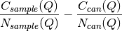

SANSStitch dialog.
Table of Contents
| Name | Direction | Type | Default | Description |
|---|---|---|---|---|
| HABCountsSample | Input | MatrixWorkspace | Mandatory | High angle bank sample workspace in Q |
| HABNormSample | Input | MatrixWorkspace | Mandatory | High angle bank normalization workspace in Q |
| LABCountsSample | Input | MatrixWorkspace | Mandatory | Low angle bank sample workspace in Q |
| LABNormSample | Input | MatrixWorkspace | Mandatory | Low angle bank normalization workspace in Q |
| ProcessCan | Input | boolean | False | Process the can |
| HABCountsCan | Input | MatrixWorkspace | High angle bank sample workspace in Q | |
| HABNormCan | Input | MatrixWorkspace | High angle bank normalization workspace in Q | |
| LABCountsCan | Input | MatrixWorkspace | Low angle bank sample workspace in Q | |
| LABNormCan | Input | MatrixWorkspace | Low angle bank normalization workspace in Q | |
| Mode | Input | string | None | What to fit. Free parameter(s). Allowed values: [‘Both’, ‘None’, ‘ShiftOnly’, ‘ScaleOnly’] |
| ScaleFactor | Input | number | Optional | Optional scaling factor |
| ShiftFactor | Input | number | Optional | Optional shift factor |
| FitMin | Input | number | 0 | Optional minimum q for fit |
| FitMax | Input | number | 1000 | Optional maximum q for fit |
| MergeMask | Input | boolean | False | Controls whether the user has manually specified the merge region |
| MergeMin | Input | number | 0 | The minimum of the merge region in q |
| MergeMax | Input | number | 1000 | The maximum of the merge region in q |
| OutputWorkspace | Output | MatrixWorkspace | Mandatory | Stitched high and low Q 1-D data |
| OutScaleFactor | Output | number | Applied scale factor | |
| OutShiftFactor | Output | number | Applied shift factor |
This algorithm is used to stitch together reduced data typically provided by Q1D v2. Data from high-angle and low-angle banks in a SANS experiment can be stitched together using this algorithm.
Merging of inputs is achieved using the following foruma, where C denotes counts, N denotes normalization and f and r relate to forward (high-angle) and rear (low-angle) respectively:

There are 4 available fit modes used to scale and shift the high angle bank data so that it can be stitched together with the low angle bank data. Where fitting is required Fit v1 is used with a composite function comprised of a FlatBackground and TabulatedFunction. In all cases the shift and scale are used to alter the counts and errors for the high angle bank.
None is the mode for no fit determined scaling or shifting. In this case the ScaleFactor and ShiftFactor properties must both be provided. With Both, fitting is used to establish optimum parameters for both the scaling and shifting of the high angle bank data. ScaleOnly mode ties the shift, so ShiftFactor must be provided. ShiftOnly mode ties the scale so ScaleFactor must be provided.
When can runs are provided they are processed separately using the same merge formula above, and then subtracted from the processed sample run. If can runs are provided as inputs then the scale and shift factors are determined as part of fitting by operating on a workspace calculated from:

This is analogous to how Q1D v2 operates on input workspaces.
Merging of front and rear banks for the can is achieved using a different form from that above.

where C denotes counts, N denotes normalization and f and r relate to forward (high-angle) and rear (low-angle) respectively. The can workspace is subtracted from the merged sample workspace to generate the output.
Example - Simple shift:
hab_counts = CreateWorkspace(DataX=range(4,10), DataY=[1]*5, UnitX='MomentumTransfer')
hab_norm = CreateWorkspace(DataX=range(4,10), DataY=[1]*5, UnitX='MomentumTransfer')
lab_counts = CreateWorkspace(DataX=range(0,6), DataY=[6]*5, UnitX='MomentumTransfer')
lab_norm = CreateWorkspace(DataX=range(0,6), DataY=[1]*5, UnitX='MomentumTransfer')
uniform_binning = [0, 1, 10]
hab_counts = Rebin(hab_counts, Params=uniform_binning)
hab_norm = Rebin(hab_norm, Params=uniform_binning)
lab_counts = Rebin(lab_counts, Params=uniform_binning)
lab_norm = Rebin(lab_norm, Params=uniform_binning)
stitched, scale, shift = SANSStitch(HABCountsSample=hab_counts,
HABNormSample=hab_norm,
LABCountsSample=lab_counts,
LABNormSample=lab_norm,
Mode='ShiftOnly', ScaleFactor=1.0 )
print("{:.1f}".format(scale))
print("{:.1f}".format(shift))
Output:
1.0
6.0
Categories: AlgorithmIndex | SANS
Python: SANSStitch.py (last modified: 2019-02-26)

{kind=link}